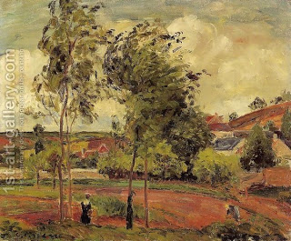

Chullin 87 - Covering the Blood of Multiple Animals
For multiple slaughters, one needs to cover the blood only once - whether he slaughters a hundred wild animals, a hundred birds, or animals and birds. Rabbi Yehudah requires separate covering for an animal and a bird, since the Torah said, "animal or bird."
If one slaughtered an animal and did not cover its blood, and another person saw this, he is obligated to cover it. If one covered the blood, and it became uncovered, he does not have to cover it again. If the wind covered the blood with earth, one does not have to cover it, but if it then became uncovered, now one has to cover it.
Once a man slaughtered an animal, but another person covered the blood first. Rabban Gamliel obligated the mitzvah thief to pay to the slaughterer ten golden dinars (about $12,000). Was the penalty for the mitzvah or for the blessing connected to the mizvah? Consider the following story.
A Sadducee told Rabbi Yehudah the Prince, "The one who created the wind did not fashion the mountains," quoting from Amos. Rabbi Yehudah said, "But the verse continues - it is God of Legions!" The Sadducee asked for three days to find an answer, during which time Rabbi Yehudah fasted and prayed to win the debate. When he was breaking the fast, a Roman arrived saying that the Sadducee did not find an answer and threw himself from a rooftop. Rabbi Yehudah invited the messenger to his meal, and at the end asked him, "Do you want to hear the blessings after the meal, or to take forty golden dinars (about $50,000)?" The Roman chose the blessings, and the Heavenly voice pronounced, "The four blessings after a meal are worth forty golden dinars." The Roman's family rose to prominence as a result, and we see that the penalty was for the blessing.
Art: Camille Pissarro - Strong Winds, Pontoise